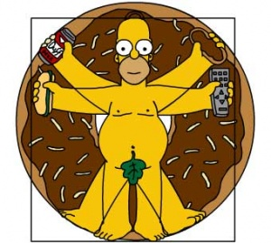

Homer J. Simpson
 De: La Frikipedia, la enciclopedia extremadamente seria.
De: La Frikipedia, la enciclopedia extremadamente seria.
De la serie grandes personajes:
| Nacimiento
|
el mismo día en que cumplió los 0 años
|
| Muerte
|
El día que adelgaze
|
| Ocupación
|
Beber Duff
|
| Nacionalidad
|
Springfieldiano - Argentino
|
| Malo o bueno
|
Bueno y vago.
|
| Atentados contra la humanidad
|
A decir verdad son tantos que no cabrian en este infobox.
|
| Religión
|
Gilipollismo ortodoxo-amaríllico , "evangelico" y supermanico.
|
| Notas
|
Venderia su alma por una rosquilla, y lo hizo, se hace mas tonto por temporada, cada semana se le ocurre algo nuevo y mas loco que hacer, si hicieran un examen de su vida suspendería con un -100 con el pretexto de que no estudió.
|
«D'oh!»
~ Homer Simpson
«la menopausia es cuando un cazador ebrio mata a la cigueña que trae los bebés»
~ Homer Simpson sobre la menopausia
«Me he masturbado 8 millones de veces y no tengo intencion de dejar de masturbarme en el futuro»
~ Homer Simpson confesandose
«Tendrá todo el dinero del mundo pero hay algo que nunca podrá comprar... ¡¡Un dinosaurio!!»
~ Homer Simpson sobre el dinero
«A la grande la llamo Mordiscos»
~ Homer Simpson sobre Mordiscos
«No soy un hombre de plegarias, pero si estás en el cielo, ayúdame ¡¡SUPERMAN!!»
~ Homer Simpson
«Alcohol: causa y a la vez solución de todos los problemas de la vida »
~ Homer Simpson sobre sus hobbies
«¡Por favor, no me comáis! Tengo mujer e hijos, ¡Comeros a ellos!»
~ Homer Simpson negociando
«Cama arriba, cama abajo, cama arriba, cama abajo... »
~ Homer Simpson sobre como dormir
«¡Estúpido Flanders y su erotismo »
~ Homer Simpson esquiando
«Dios es mi personaje de ficcion favorito»
~ Homer Simpson sobre religión
«¡Piérdete, Flanders!»
~ Homer Simpson a su querido vecino
«Sólo comere carne de cerdo, vaca, ternera, caballo, flamenco los martes, perro en la cena, y la carne más dulce... la humana»
~ Homer Simpson sobre su dieta
«¡Ayudame niño Jebús! »
~ Homer Simpson
«¡Te matare pequeño demonio!»
~ Homer Simpson extrangulando a Bart.
«Dios, espero que sea verdad eso de que lo ves todo. Bueno, claro, eres omnívoro»
~ Homer Simpson rezando
«¡Ordenador, mata a Flanders!»
~ Homer Simpson haciendo uso de la informática
«...y de beber, albóndigas »
~ Homer Simpson pidiendo en un restaurante
«Homer, como eres más tonto que una mula pero más feo, si un desconocido te pide que te vayas con él, te vas con él »
~ Abraham Simpson dando consejos paternales a Homer
«¡Mi Homer no es comunista!, puede ser un mentiroso, un cerdo un idiota, un comunista ¡¡pero de actor porno no tiene nada!! »
~ Abraham Simpson sobre su hijo
«Me gusta la cerveza fría, la televisión alta y que los homosexuales mariposeen»
~ Homer Simpson sobre sus gustos
«Voy a matar a Moe... ¡Wiiiii!»
~ Homer Simpson promocionando la Noentiendo Wii
«¡Marge! A Maggie se le han caído sus piernas de leche. »
~ Homer Simpson Homer despues de que a Maggie se le caen las piernas.
«El lugar más caluroso de la Tierra es el Sol»
~ Homer Simpson Homer dsobre el clima del planeta tierra
Nombre Completo: Homer Jimeno Jay Simpson. Filósofo y librepensador de piel amarilla y cabeza poblada por dos pelos (amigo de homer thompson). Se trata del típico padre de familia americano de 39 años de edad, de poca inteligencia, pocas ganas de trabajar y muchas de emborracharse y ver la televisión atiborrándose de productos altos en grasa.
A Homer no le importa que le llamen obeso (porque no sabe lo que es), lo que realmente le molesta es que le llamen gordo. Uno de sus mayores sueños es convertirse en una rosquilla gigante de chocolate y rellena de crema.
Mejor conocido en Latinoamérica con el seudónimo misterioso e inidentificable "Homero".
Gustos
La comida favorita de Homer es digna de mención por su alto nivel protéico y calórico y ser un gran ejemplo de la dieta mediterranéa recomendada para niños en etapas de crecimiento: Costillas de cerdo, chuletas de cerdo, el bacon, rosquillas, cacahuetes con miel, gofres con todo tipo de salsa por encima, pasteles de crema, hamburguesas Krusty, hamburguesas Krusty con queso, hamburguesas Krusty dobles, costiburguers, cualquier animal vivo, las cenas congeladas Salisbury, la Cerveza Duff, los Pretzels, las palomitas de maíz, el algodón de azúcar, los bocatas grasientos, bocatas con el premio guinnes, bocatas con el premio guinnes caducados de dos semanas, las dulces venus, todo lo que tenga un baño de caramelo, cualquier cosa frita, el sirope, los tranchetes, los rollitos de pudding, el queso americano, el chocolate de los helados de vainilla fresa y chocolate, las barritas de chocolate, los bombones de chocolate, el chocolate con leche,el chocolate con chocolate, y chocolatácticos en general, las rosquillas(donas) marca el mozo mantecoso, el chocolate con almendras, los pastelitos chocolatosos, perritos calientes, el puré de patatas, los emparedados de atún, el chile, las patatas de la era espacial, la Krustiburguer, el fleshisuise, las rosquillas(donas) de plastelina de herencia genetica, los brazos de montañeros perdidos, ternera, flamenco, cerdo, vaca, tierra, todo lo que se mueva...
Su vida
Pese a su escasa inteligencia y sentido común, la mayoría de los que le seguimos le envidiamos. ¿Por qué? Muy sencillo, por todo lo que rodea a su vida, a saber:
- Tiene un puesto de trabajo fijo como inspector de seguridad en una central nucelar, pese a numerosas agresiones a su jefe, ausencias, y a su escasa o nula capacidad productiva (lo normal en estos casos, vamos). Tiene además un despacho propio con una placa en la que se lee "Don't forget, you are here forever" (No lo olvide, está aquí para siempre), recordando la naturaleza vitalicia de su cargo.
Homer y
Bender, vaya 2 para salir de cogorza
Homer en su maximo punto de fama.
- Ha sobrevivido caídas desde un rascacielos, desde un cañón de 500 metros de profundidad, a ser disparado repetidamente por un cañón, a la caída de un coche encima, a innumerables disparos, a que se le cerrara un puente en su cabeza para que, posteriormente, varios coches le pasaran por encima, a la explosión de una lata de cerveza movida con saña por su hijo Bart, a un holocausto nucelar, a enfrentamientos con la mafia y con piratas, a ataques cardíacos, a un accidente en una refinería, a ser electrocutado, a naufragios en alta mar, a la cancelación de su serie, a abducciones, a sendos ataques de innumerables cuervos y de un tejón los cuales le provocaron graves daños, a la ira del gremio de camioneros de los EEUU, a la obesidad morbida (curiosamente salvo a Sprigfield de un escape radiáctivo, gracias a su anchura traseril), a una patada giratoria del innombrable-aunque en realidad sólo lo soportó porque su barriga absorbió casi todo el golpe (episodio inédito)-, a la intoxicación por comer un pescado venenoso,que le caiga un auto etc. Estos hechos nos hacen pensar que Homer es inmortal.
Homer en un día cualquiera
- Ha estado en coma profundo durante varias semanas.
- Le fascinan los monos, llegando a emplear un mono adiestrado para ayudar a personas con discapacidad, llamado Mojo, para sus propios fines (dígase robar donas). Al final Mojo aprendió toda clase de malos hábitos y vicios y tuvo que ser devuelto, en un estado francamente deplorable, a la tienda de donde salió, "para que lo rehabilitaran", en palabras de Marge. En otra ocasión, Homer utilizó el yate privado del Sr. Burns en aguas internacionales para organizar una pelea de monos con cuchillos.
- Ha viajado a la Tercera Dimensión.
- Venció al campeón de sumo en Japón y cuando le iban a entregar el premio, dejó KO al emperador.
- Venció a Tony Hawk en un concurso de patinetas con trampas, siendo asì nombrado "El rey de ese pseudo-deporte"
- Habló con Dios y sabe el sentido de la vida.
- Está casado con Marge Simpson, una mujer inteligente, sacrificada y que está buena, pese al moño hortera que peina.
- Le llega el dinero para mantener a sus tres hijos, Bart, Lisa y el perro, según él.
- Timó a R.E.M. para que tocaran en su cochera,Michael el vocalista del grupo se lo iba a echar con una botella pero se arrepintió porque...es homer simpson!.
- Ha sido inspector de sanidad de su ciudad.
- Fabricó su propio licor y al final salio bien parado.
- Se comió todas las donas que tenía el departamento de torturas irónicas en el infierno, y encima pedía más.
- Conoció a una compañera de trabajo que estaba cañón, que tenía sus mismas aficiones, y a la que se pudo llevar al catre si hubiera querido.
- Fue manager de una cantante de Country macizorra y a la que también se pudo haber llevado al catre.
- Ha sido guardaespaldas del alcalde de su ciudad, protegiéndole de todos los matones de la mafia sólo con la ayuda de su hija menor.
- Puede ingerir residuos nucleares sin salir malparado.
- Su mujer está buena, y las dos mujeres con las que ha podido tener una aventura también. Hemos de recordar que Homer es calvo, gordo y tonto.
- Se le atascó la cabeza dentro del trasero de su cerdo, casi muere por asfixia ( el puerco ).
- Come mas que tu y tiene mejores dientes que tu?
- Unos matones arruinaron su negocio de matones (mismo Gran Theft Auto o Scarface (Caracortada, con Al Pacino). Luego de eso decidio fundar la comunidad virtual de Criminapolis (donde puedes ser maton a tu gusto y apalear dóciles ancianitas para ganar dinero y parecer mas guarro ante tus amigos). Fue su dueño hasta que Bill Gates le quito también este negocio.
- Ha ganado un Grammy con un grupo de canción voca
- Es sub-campeón de los pesos pesados de boxeo.
- Se casó en Las Vegas con una fulana y cuando su mujer se enteró encima lo ayudó a librarse de ella.
- Ha estado a punto de hacerse rico varias veces : inventó un licor llamado Flameado de Homer, tuvo a Bobo, oso de peluche en la infancia del señor Burns, inventó un martillo eléctrico que se dejó en el museo Edison, trabajó para su millonario hermanastro y le fastidió el negocio, el señor burns atropello a su hijo y pudo haberle sacado al viejo 1,000,000 de dolares (de no ser por su esposa), Su hijo fue el heredero de el señor Burns.
- Ha sobrevivido a varios infartos. El peor sin ninguna duda, fue cuando se entero que el 10% de 150.000.000 millones de dólares, no eran 15.000 mil dólares (hasta ese momento tan solo habia sufrido 4), sino 15.000.000 millones, y que es lo que su hija Lisa rechazó por la venta de una fabrica, de la que tenia el 10% de los beneficios.
- Ha conducido un Ferrari recien salido de fabrica. Despues lo estrelló contra una mozzarella gigante.
- Ha estado en varios países de los 5 continentes: Canadá, Brasil, Reino Unido, Francia, de Safari en África, Marruecos, Australia, Japón, China ...
- Es superatleta de un deporte español que se ha exportado a todo el mundo,que practica a todas horas ,sobre todo en su trabajo. No hablamos de otra cosa: la siesta.
- Entre sus estudios y doctorados ,destacan su muchas horas de tetris que de momento solo le han servido para poder meter en su coche todo lo que compró en un mercadillo organizado por Rainier Wolfcastle.
- Y a pesar de las cosas que ha hecho en su vida...está siempre deprimido por que el coche fantástico no le hace caso..(la voz del coche fantástico y de Homer en España es del mismo doblador, por si no lo saben).
- Aunque todos no lo crean Homer es un hombre muy culto y sería muy inteligente si no tuviera un lápiz en el cerebrooo...entre sus lecturas favoritas y recomendadas destaca el valor nutricional y componentes de un frasco de cacahuetes con miel.
- Conoce a decenas de famosos.
- Pocas veces, por no decir ninguna, Homer ha ido al servicio a "hacer sus necesidades" o sea, "caca". El dia que vaya por primera vez, habrá que llamar al FBI, Jack Bauer y al Ejército Norteamericano. También a Bush y Aznar para que verifiquen si es un arma de destrucción masiva.
- Estuvo cerca de vivir en un universo perfecto mientras viajaba por el tiempo con su tostador: millonario, cuñadas muertas, niños obedientes y educados; pero salio corriendo y gritando como niña cuando descubrio que nadie sabia lo eran las rosquillas, solo para que segundos despues empezaran a caer del cielo y que los demas se referian a eso como lluvia.
- Su objetivo principal es matar a Moe (uuiiiiii!), hecho que está planificando desde los albores de su nacimiento, si no lo ha hecho aún es porque Moe le suministra cerveza.
- Se montó una iglesia en su garage cobrando por realizar bodas gay y lésbicas.
- Predijo el apocalipsis 3 veces, en 2 de ellas se equivocó y la tercera se cumplió.
- Formó su propia banda de Sadgasm, pero se sepáro por inyectarse heroína.
La famosa J de su nombre
Muchos són los que alguna vez se han preguntado que significa la J de Homer J. Simpson' su nombre, pues bien, en un capitulo Homer destapa un dibujo de su madre en el cual esta escrito su nombre completo, "Homer Joputa Jay Simpson", el chiste está en que "Jay" es "Jota" peró en ingles, esta aclaración es para aquellos descerebrados que o bien no lo hayan cogido o bien no entiendan ni "Jota" de inglés.
2 Homeuros, la nueva moneda de España en honor a su lider Homer
Aunque en un capitulo en un hospital lo llaman por el nombre de Homer "Jimeno" Simpson.
Sus empleos a lo largo de su vida
A lo largo de su larga y ejemplar vida y a pesar de ser un prezoso del culo, ya q mo exixte explicacion coherente de como un hombre con poca inteligencia y q no ha levantado un dedo ni para vestirse haya tenido tal cantidad de oficios , Homer Simpson ha sido:

Homer Jay Simpson, todo un ejemplo para la humanidad
- Criado de una anciana(que muere y piensan que Homer la ha matado).
- Vendedor de tomaco (mezcla de tomate y tabaco
sumamente adictivo).
- La Muerte.
- Astronauta.
- Inspector de seguridad de la planta nuclear de Springfield.
- Empleado en el sector 7G de la planta nuclear de Springfield.
- Vendedor de helados.
- Ladron.
- Granjero.
- Vendedor de azucar a domicilio.
- Crupier.
- Asesino a sueldo.
- Bombero.
- Soldado.
- Santa Claus.
- Actor de voz.
- Critico de restaurante.
- Guardia de carcel (internado donde meten a Bart).
- Soplon de la carcel del Sr. Burns.
- Quita nieves.
- Mayordomo.
- Vendedor de grasa.
- Vendedor de azucar.
- Dueño de una compañia de internet Compuglobalhipermeganet (posteriormente destru... comprada por Vil Gays).
- Estrella de Rock.
- Vendedor de resortes.
- Entrenador de Football Americano.
- Árbitro de fútbol.
- Boxeador.
- Luchador de Lucha Libre.
- Timador junto a Bart.
- Conductor de monorail.
- Camionero.
- Inventor de coches para su hermano.
- Cura de bodas gay.
- Skater.
- Modelo de fotos eroticas para marge.
- Trabajo en una bolera quitandole el puesto a Barney su mejor amigo.
- Lider de
akatsuky los Canteros.
- Conductor de Ambulancia.
- Taxista.
- Artista Plástico.
- Vagabundo.
- Cantinero.
- Cazador.
- Quiropráctico.
- Tenista.
- Friki de feria.
- Encuestador.
- Salamandra de seguridad.
- Don Barredora.
- Acomodador de bolos.
- Misionero.
 Espécimen en hábitat desconocido. ¿Quién es el de abajo?
- Profesor de como tener un buen matrimonio.
- Entrenador de Caballos.
- Ayudante en el Badulaque.
- Gerente de la planta nuclear.
- Niñero.
- Secretario del señor Burns.
- Presidente de la planta nuclear de India.
- Consejal de limpieza.
- Alcalde de "Nueva Springfield".
- Guardaespaldas.
- Jefe de patrulla vecinal de seguridad.
- Guardia de seguridad del
puteadero reformatorio.
- Voz del perro Poochie.
- Cantante de Opera.
- Payaso personal del Señor Burns.
- Mafioso junto a Bart y Michael (el hijo de Tony el Gordo).
- Imitador de Krusty.
- Inventor.
- Actor de comercial.
- Reverendo.
- Profeta.
- Contrabandista de cerveza (Barón de la birra).
- Presidente del Sindicato.
- Superhéroe (Pastel Man).
- Paparazzi.
- Rompe
culos piramides.
- Salamandra.
Intentos de matar a Ned Flanders
- Compró un ordenador para matar a Ned Flanders, pero el ordenador sólo consiguió darle al buen Ned zumbido en los oídos .
- En un especial de Halloween le disparó con una escopeta, poco después se enteró de que era un zombie.
- En otro especial lo intentó con clones suyos, de los cuales uno salió defectuoso y malvado. Fue así como nació Peter Griffin.
- Arrojó un simio radioactivo a su casa, pero el simio se contentó con apoderarse de la planta baja y servir de copiloto de Ned.
- Una vez lo consiguió en sueños, soñando que era el oso Yogui Simpson que devoraba al guardia forestal Ned Flanders.
- Marge Simpson ha estado más cerca que Homer cuando lo atropelló con el coche, por desgracia llegó tarde ya que Flanders ya se había convertido en hombre lobo.
- Llamó a Hulk Hogan pero este en vez de matar a Flanders, lo mato a él.
- En la actualidad sigue planeando absurdos intentos de asesinato,cada uno más asombroso y ridículo que el anterior,con lo que nos hará reír.
- Demostró que Dios no existe.
- Hizo reventar la central nuclear mandando a tomar por el culo a toda la ciudad, y Ned fue el segundo que sufrió las consecuencias.
- Asestó várias puñaladas traperas por la espalda a Ned, tocándole cuatro órganos vitales. Ned sobrevivió.
Su familia

El pequeño Homercito en el trabajo
- Su hijo mayor, Bart Simpson (
el Barto), a pesar de no dar más que problemas, es bastante ingenioso y popular.
- Su hija mediana, Lisa Simpson, tiene un elevado coeficiente intelectual para su edad (8 años), toca el
pene Saxofón como nadie, y tiene un gran futuro, pese a que su inteligencia es ignorada en el seno de su familia.
- Su hermano
Gemelo ex multimillonario al cual Homer le arruinó la carrera dejandolo en Bancarrota tras haberle pedido permiso para la invención de un automóvil bizarro que quería valuar en miles de dólares.
- Su hija pequeña, Maggie Simpson, no aporta mucho; normal, es un bebé, pero tiene la ventaja de que llora poco y no habla (el sueño de muchos padres). Sabe manejar la escopeta, por poco asesina al señor Burns cuando este le intento robar una piruleta, y el rifle, lo utiliza cuando homer iba a ser asesinado por la mafia. Hay que destacar que en la película la niña salva a Homer y a Bart de ser asesinados por un loco alto mandatario del gobierno de Schwarzenagger. Produce un agradable sonido con el chupete.
- Su padre, el abuelo Simpson, pese a estar en un asilo, lideró un comando en la II Guerra Mundial; en una ocasión estuvo a punto de asesinar a Adolf Hitler y ganó una Cruz de Hierro, una cadera de hierro y una pierna de hierro.Formo junto a sus amigos de Springfield la "alianza" del pez volador, tras robar unos cuadros nazis y combatió en la primera guerra mundial solo que era niño y lo que hacia era enseñarle un dibujo al sargento, quien acto seguido lo llevaba a la cama .
- Su madre,Mona Simpson la cual le abandono para armar revueltas hippies contra el señor Burns,su lugar materno lo ocupó un frgorífico.
- Cómo olvidarnos de su hijo adoptivo, Hans Topo cuyo cariño Homer demostraba besándolo en la frente (según él porque le recordaba a un cacahuete azucarado), también es el hijo perdido de los simpsons, bart, al que un detective consigue reconciliar con los simpsons.
- Como no olvidar a su media hermana inglesa, Abbey (No, no es Abbey Road), producto de un amorío con una inglesa que se caía de Tía Buena Empollona (No confundais con la Dra. Cameron). Por cierto: le gustan los pellejos
Según un estudio reciente realizado por la NASA parece ser que este personaje no es ni más ni menos que el mismísimo Dios, representado en dibujo animado para traernos la buena nueva. Sin embargo, nosotros no le hacemos ni puto caso y nos descojonamos de él... Como somos...
Frases célebres
Esta sección fue trasladada aquí.
Vea también

Homer conociendo a un clon fallido.
Enlaces externos
Autor(es):
- Krusher
- Nexo
- Fordus
- Hari Seldon
- Huds
- Uno si
- Barbadeus Motsand
- ¿Fran?
- Doctor grijander
- DoctorMalo
Frikipedia 2005-2016, Licencia
GFDL 1.2 - Extraído por FrikiLeaks